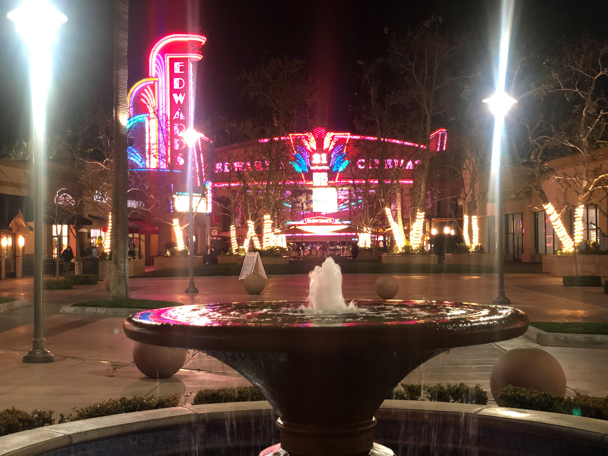
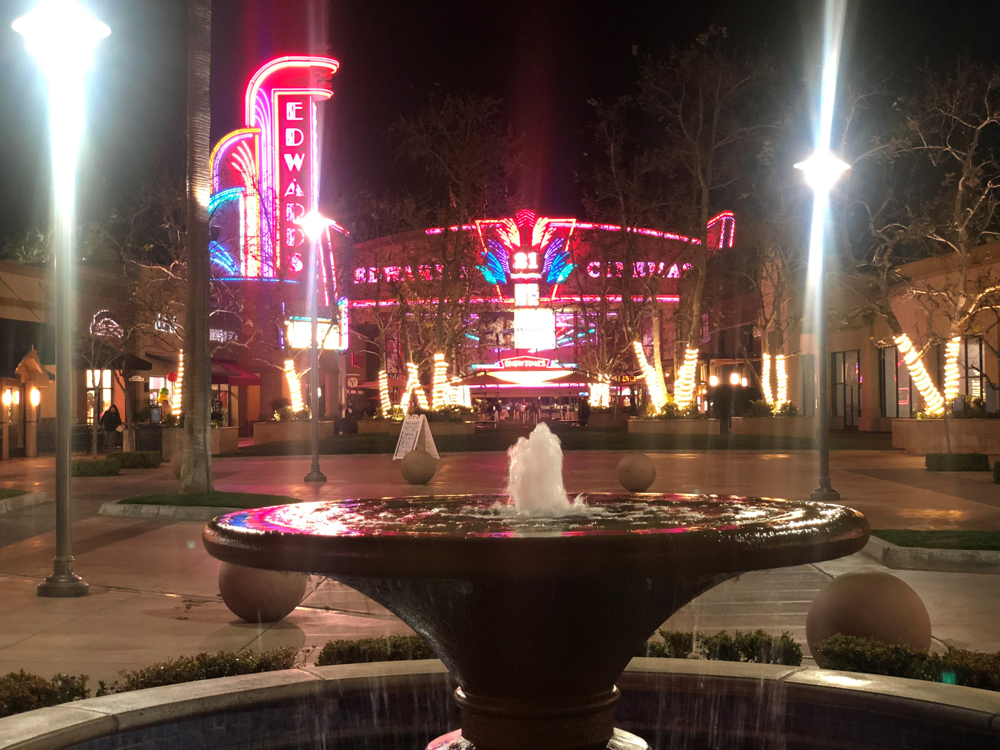

Why Photography?
When I took photography in high school as an elective, it never caught my interest until I got a DSLR in my hands. Exploring nature, taking portraits, it was amazing to create amazing picture. To this day I am striving to do photography as a side job.
read more ...
As a major or side hobby?
I am studying economics but I would love to have photography as a side business. Doing photography brings the creativeness out of me and I see it as an adventurous hobby.
read more ...
Equipment
Since I still consider myself a beginner, I use a Canon T6. I have 3 lenses, 50mm 1.8, 18-55mm, and Samyang 2.8 lens. My favorite lense would be the 50 mm since I love to get my clients background blurry. Makes them stand out.
read more ...
About Me
I a located in Visalia, Ca and I am 21 years old. I currently attend Fresno City and College of the Sequoias majoring in Economics and minoring in Photography. Side hobbies I love to do is photography, fishing, playing hockey, and traveling.
read more ...
.jpg) 
